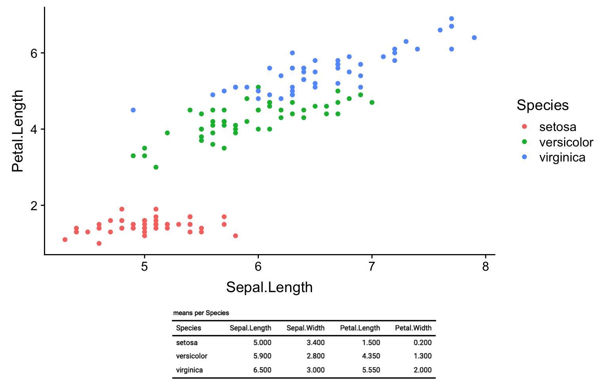
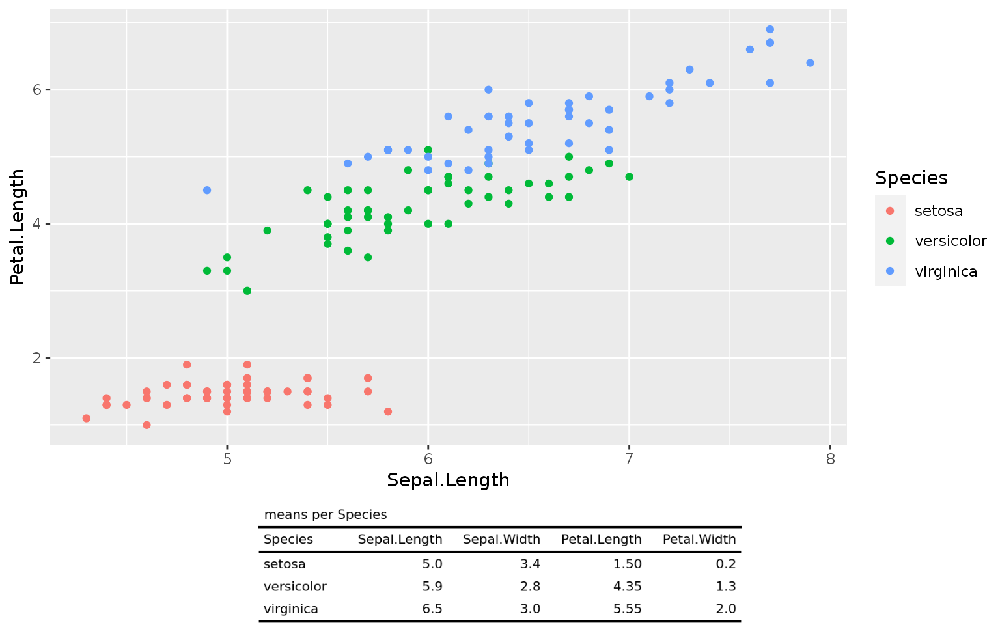

Beeing able to render flextable as images is requiring package webshot or webshot2 to be available.
Run the following command to install webshot2. This package should be used instead of webshot as the latest can have some issues with html rendering.
devtools::install_github("rstudio/webshot2")
Read more about it here.
Run the following command to install webshot. You may have to install phantomjs first.
install.packages("webshot")
You can print a table as an image. In some case, you may want to know the exact width and height of the table to be sure to set up the correct aspect ratio. The function flextable_dim() will provide these informations without the need to produce the image.
ft <- flextable(head(iris)) dims <- flextable_dim(ft) dims #> $widths #> [1] 3.75 #> #> $heights #> [1] 1.75 #> #> $aspect_ratio #> [1] 0.4666667
Results are in inches. You can reuse them as values for knitr chunk options fig.asp, fig.width and fig.height.
To get an image file from a flextable object, use function save_as_image.
img_file <- tempfile(fileext = ".png") save_as_image(ft, path = img_file) #> [1] "/tmp/RtmpztR9Zl/file7e9545f4f3f6.png"
To get a plot from a flextable object, use function plot.
plot(ft)

To add a flextable on a ggplot2 object, one can use
flextable::as_rasterandgrid.rasterorrasterGrob. See Examples for an example.
You can also add the flextable (with grid::rasterGrob() and ggplot2::annotation_custom()) in a ggplot object. You need first to use as_raster() function that will return a raster version of the flextable.
library(ggplot2) library(grid) library(cowplot) library(dplyr) gg1 <- ggplot(iris, aes(Sepal.Length, Petal.Length, color = Species) ) + geom_point() ft_raster <- iris %>% group_by(Species) %>% summarise_all(median) %>% flextable() %>% autofit() %>% add_header_lines("means per Species") %>% as_raster() gg2 <- ggplot() + theme_void() + annotation_custom(rasterGrob(ft_raster), xmin=-Inf, xmax=Inf, ymin=-Inf, ymax=Inf) cowplot::plot_grid(gg1, gg2, nrow = 2, ncol = 1, rel_heights = c(4, 1) )
